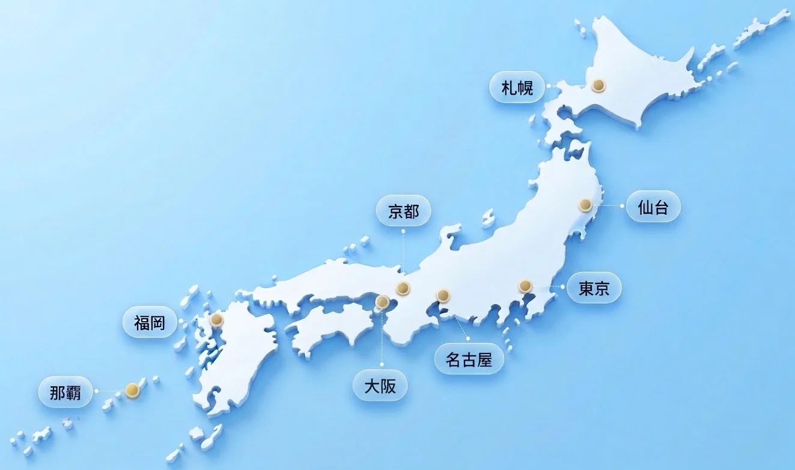

設定内容はこの端末内にのみ保存されます。
大阪
天気を読み込み中です…
 AI生成画像写真はイメージです。体感や体調で調整してください。
AI生成画像写真はイメージです。体感や体調で調整してください。
都市別コーデ図鑑
8つの地域の代表コーデです。カードをタップすると、上の地図と詳細がその地域に切り替わります。
服装の決め方
服装は、まず最高気温を見て、羽織の厚さを七つの段階から選びます。ただ、朝と晩の冷え込みは、昼の暖かさとは別のものです。最低気温もあわせて見て、冷える日には一段だけ厚くしておくと、一日を無理なく過ごせます。
| 最高気温 | 区分 | 羽織の目安 |
|---|---|---|
| 4℃以下 | 極寒 | ロングダウン＋極暖インナー |
| 5〜9℃ | 防寒 | ダウン＋ニット＋マフラー |
| 10〜14℃ | 厚手 | 中綿コート＋ニット |
| 15〜19℃ | 春秋 | トレンチやジャケット |
| 20〜24℃ | 軽い羽織 | シャツジャケットやカーディガン |
| 25〜29℃ | 薄着 | 半袖＋冷房対策の羽織 |
| 30℃以上 | 盛夏 | 速乾・UV対策・帽子 |
合わせる単品は、その季節の「流行」のなかから拾っています。季節のはじめに、大手アパレル各社の今季の提案と、主なファッションメディアの紹介とを静かに見比べ、どちらにも共通して現れるものだけを集めて「今季の商品プール」としました。そのなかから、気温の区分に合うものを優先して組み合わせています（「今季流行」と小さく記したものが、今季の流行単品です）。アイテムは商品名のみで記し、メーカー名・ブランド名は付けていません。
天気による補正も、少しだけ加えています。雨の日は、降水確率に応じて折りたたみ傘と撥水の備えを足します。雪の日は傘ではなく、防寒の小物と、滑りにくい足元を優先します。晴れて暑い日にはUV対策を、気象庁が「やや強く」以上の風を予報する日には、防風素材の羽織をすすめます。昼と朝晩の体感差が大きい日は、脱ぎ着できる重ね着を一枚足してください。
学生（中学生・高校生）については、平日は制服を前提に、制服の上と下に足す防寒と雨の備えを示し、休日は私服のコーデを出します。60代・70代以上の方には、軽さ、前開きの着やすさ、滑りにくい靴底など、無理のないことを優先しました。
天気データは、気象庁（https://www.jma.go.jp）の天気予報を使用しています。当日の気温は、その日の発表の中で気象庁が発表した値を表示します（夕方の発表に当日の気温が含まれない場合は、その日の早い時間の発表の値を引き継いで表示します）。
天気データは、気象庁の予報を主に用いています。値が取得できないときや、予報のあいだに不整合があるときは、Open-Meteo の値で代替します。